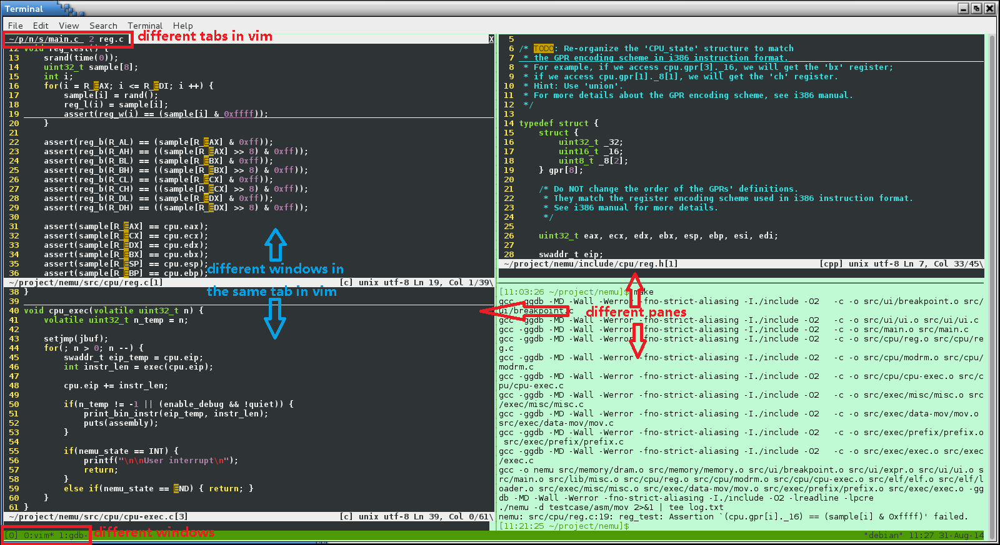

More Exploration
Learning to use basic tools
After installing tools for PAs, it is time to explore GNU/Linux again! Here is a small tutorial for GNU/Linux written by jyy. If you are new to GNU/Linux, read the tutorial carefully, and most important, try every command mentioned in the tutorial. Remember, you can not learn anything by only reading the tutorial. Besides, 鸟哥的Linux私房菜 is a book suitable for freshman in GNU/Linux.
Write a "Hello World" program, compile it, then run it under GNU/Linux. If you do not know what to do, refer to the GNU/Linux tutorial above.
Write a Makefile to compile the "Hello World" program above. If you do not know what to do, refer to the GNU/Linux tutorial above.
Now, stop here. Here is a small tutorial for GDB. GDB is the most common used debugger under GNU/Linux. If you have not used a debugger yet (even in Visual Studio), blame the 程序设计基础 course first, then blame yourself, and finally, read the tutorial to learn to use GDB.
Read the GDB tutorial above and use GDB following the tutorial. In PA1, you will be required to implement a simplified version of GDB. If you have not used GDB, you may have no idea to finish PA1.
The most important command in GNU/Linux is man - the on-line manual pager.
This is because man can tell you how to use other commands.
Here is a small tutorial for man.
Remember, learn to use man, learn to use everything.
Therefore, if you want to know something about GNU/Linux
(such as shell commands, system calls, library functions, device files, configuration files...),
RTFM.
Installing tmux
tmux is a terminal multiplexer.
With it, you can create multiple terminals in a single screen.
It is very convenient when you are working with a high resolution monitor.
To install tmux, just issue the following command:
apt-get install tmux
Now you can run tmux, but let's do some configuration first.
Go back to the home directory:
cd ~
New a file called .tmux.conf:
vim .tmux.conf
Append the following content to the file:
setw -g c0-change-trigger 100
setw -g c0-change-interval 250
bind-key c new-window -c "#{pane_current_path}"
bind-key % split-window -h -c "#{pane_current_path}"
bind-key '"' split-window -c "#{pane_current_path}"
The first two lines of settings control the output rate of tmux.
Without them, tmux may become unresponsive when lots of contents are output to the screen.
The last three lines of settings make tmux "remember" the current working directory
of the current pane while creating new window/pane.
Maximize the terminal windows size, then use tmux
to create multiple normal-size terminals within single screen.
For example, you may edit different files in different directories simultaneously.
You can edit them in different terminals, compile them or execute other commands in another terminal,
without opening and closing source files back and forth.
You can scroll the content in a tmux terminal up and down.
For how to use tmux, please search the Internet.
The following picture shows a scene working with multiple terminals within single screen.
Is it COOL?

You should have used scroll bars in GUI.
You may take this for granted.
So you may consider the original un-scrollable terminal (the one you use when you just log in) the hell.
But think of these: why the original terminal can not be scrolled?
How does tmux make the terminals scrollable?
And last, do you know how to implement a scroll bar?
GUI is not something mysterious. Remember, behind every elements in GUI, there is a story about it. Learn the story, and you will learn a lot. You may say "I just use GUI, and it is unnecessary to learn the story." Yes, you are right. The appearance of GUI is to hide the story for users. But almost everyone uses GUI in the world, and that is why you can not tell the difference between you and them.